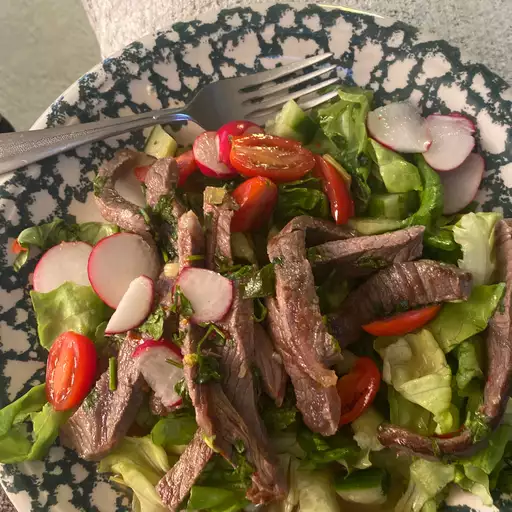

Thai Beef Salad

Description
This tasty Thai beef salad has lots of Thai flavors and is so colorful!
Ingredients
- 1 cup lime juice
- 1 cup chopped fresh cilantro, plus more for garnish
- 1 cup chopped fresh mint leaves
- ½ cup white sugar
- ⅓ cup fish sauce
- 2 green onions, chopped
- 1 tablespoon sweet chili sauce
- 1 ½ pounds (1 inch thick) steak fillet
- ½ English cucumber, diced
- 1 pint cherry tomatoes, halved
- 1 stalk lemongrass, smashed and cut into 1-inch pieces
Steps
- Mix lime juice, cilantro, mint leaves, sugar, fish sauce, green onions, lemongrass
- Preheat an outdoor grill for high heat and lightly oil the grate.
- Cook steak on the preheated grill until it begins to firm and is hot and slightly pink in the center, about 4 to 6 minutes per side
- Transfer steak to a chopping board and slice into thin strips
- Place lettuce in a salad bowl
Back